The Watch
Captures desktop
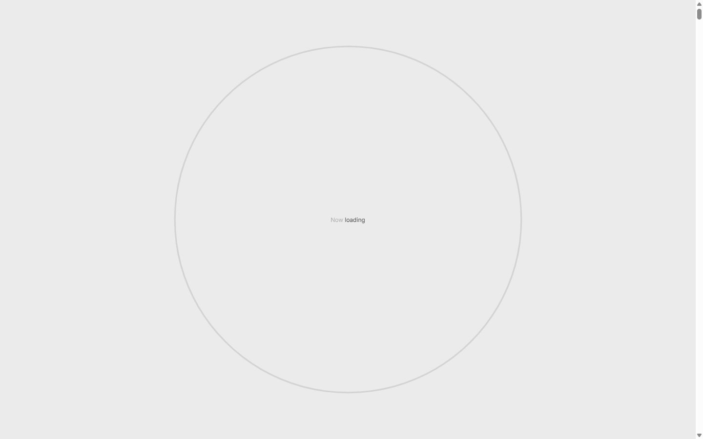
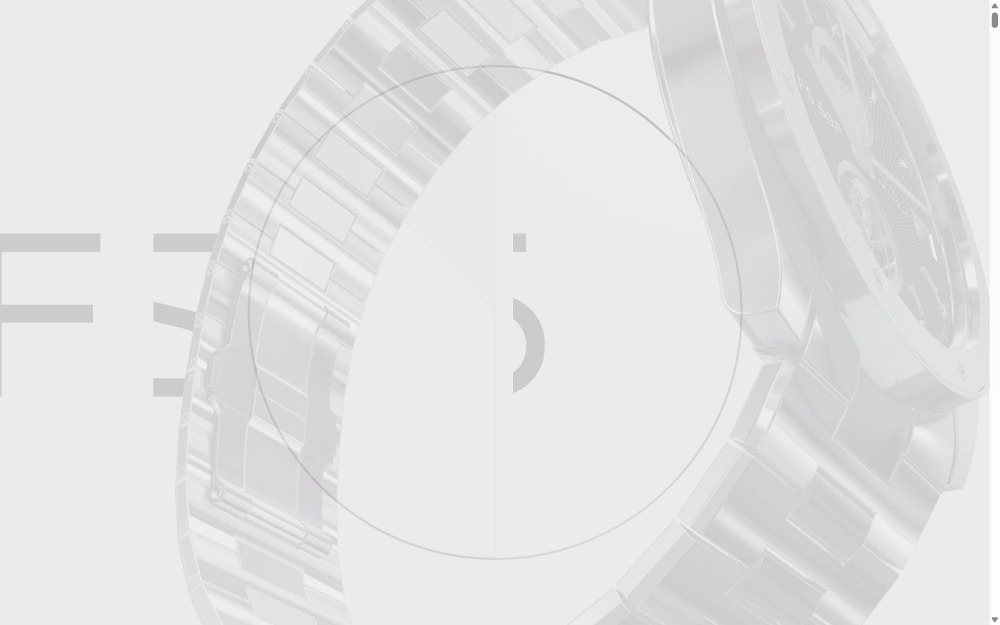
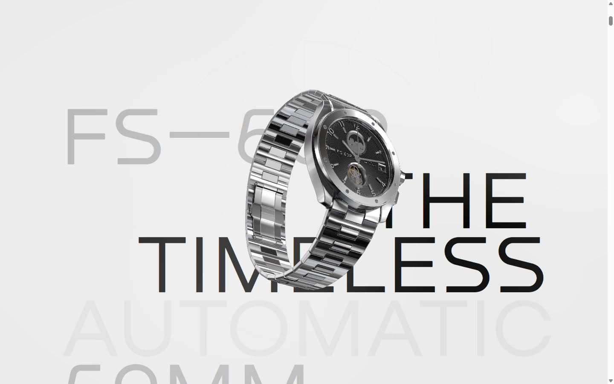
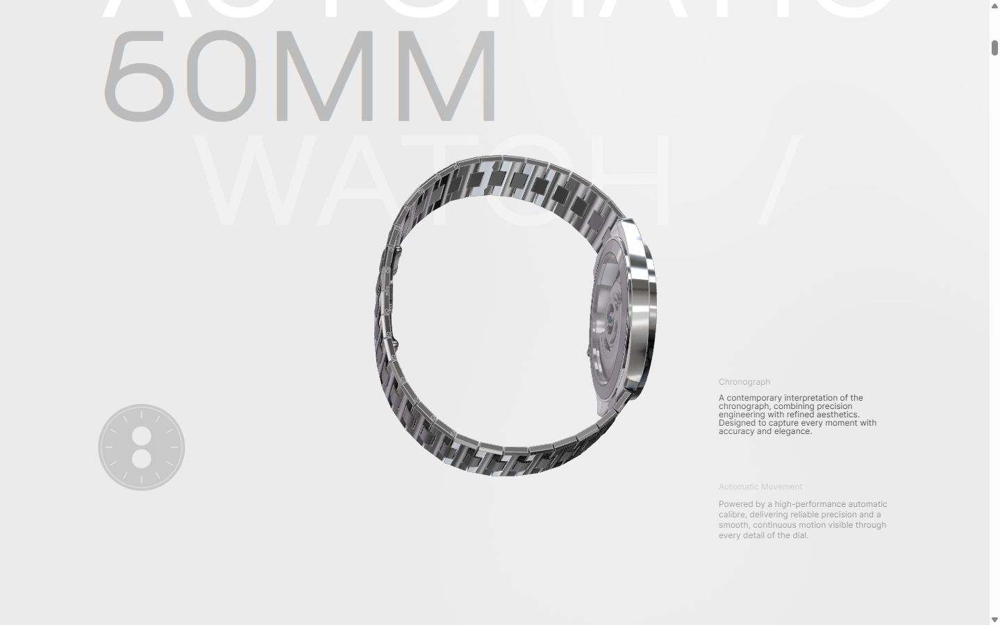
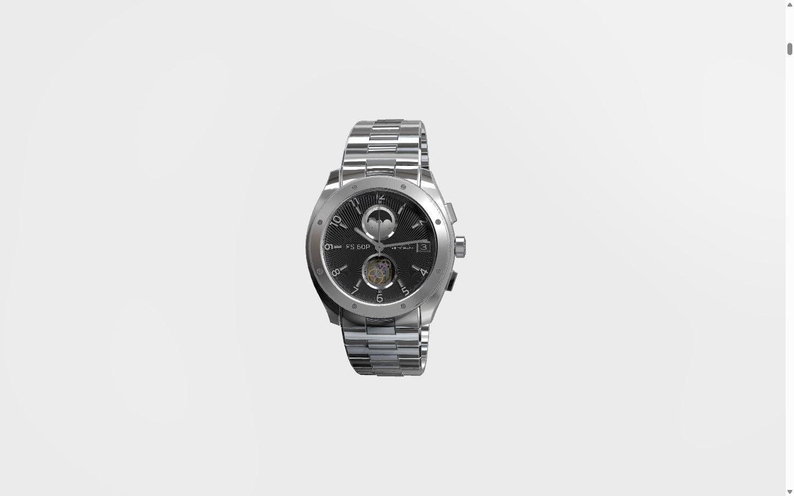
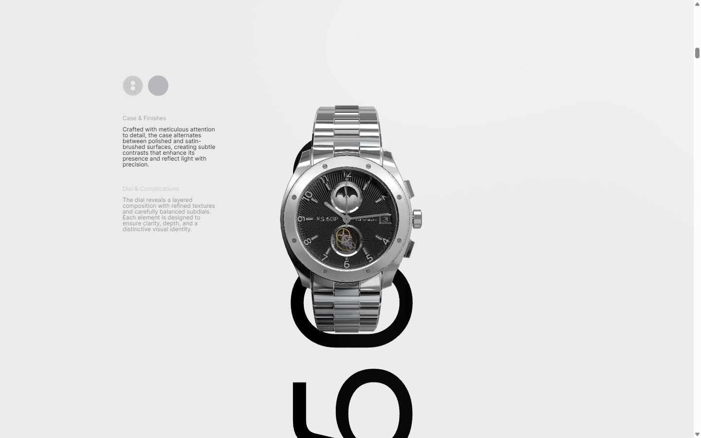
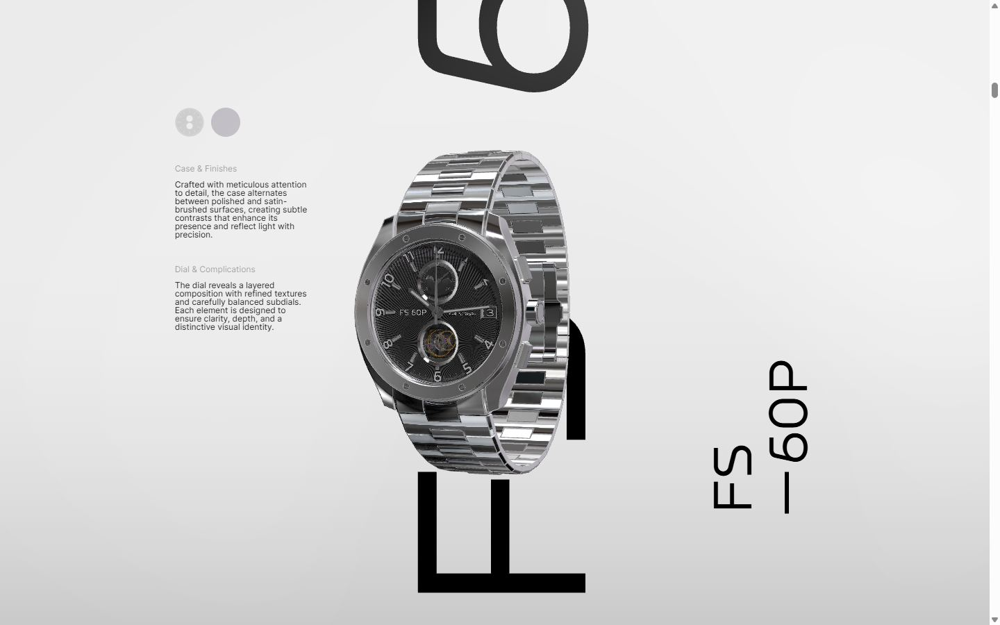
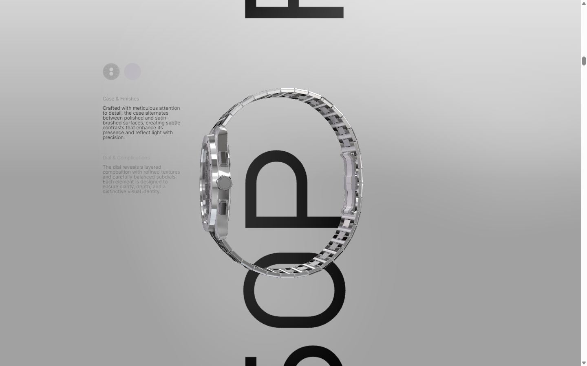
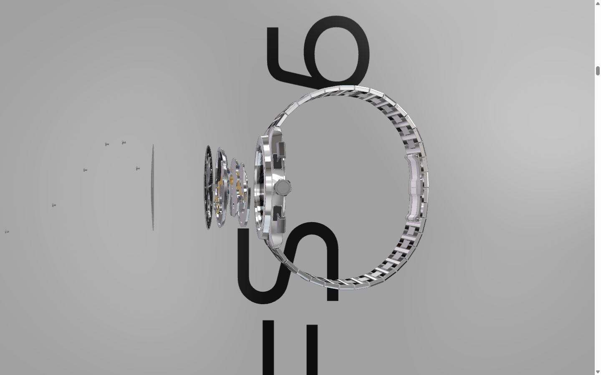
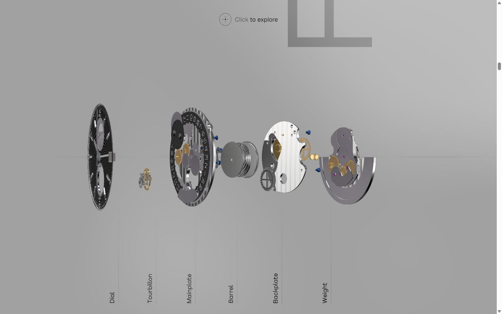
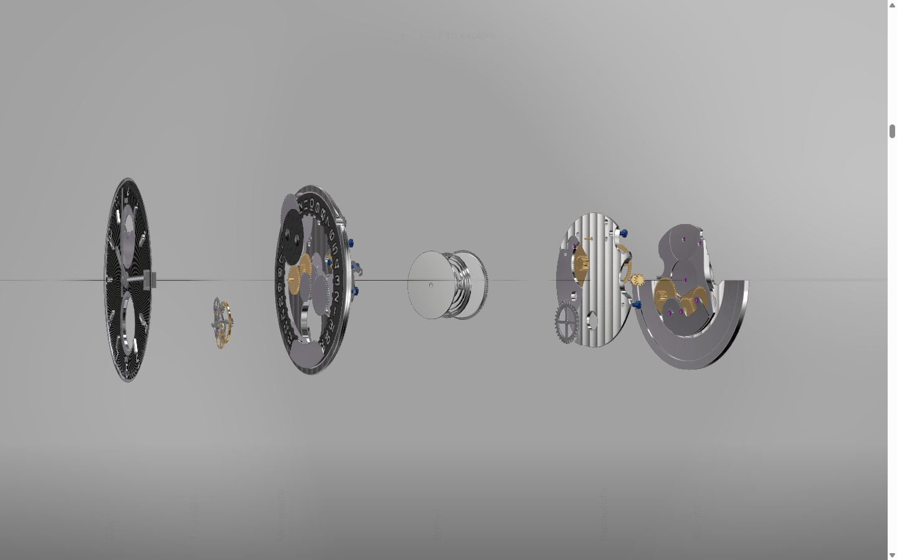
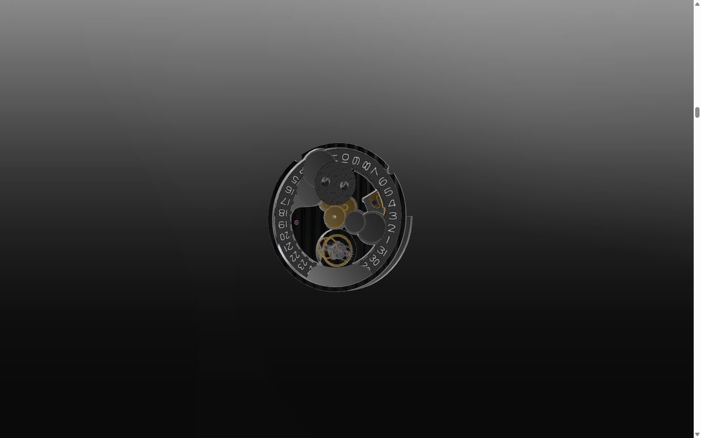
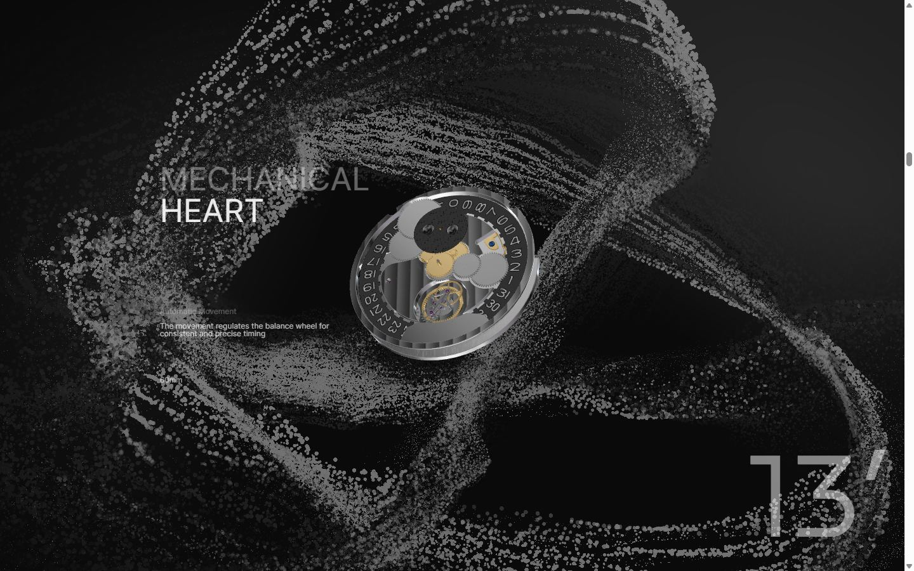
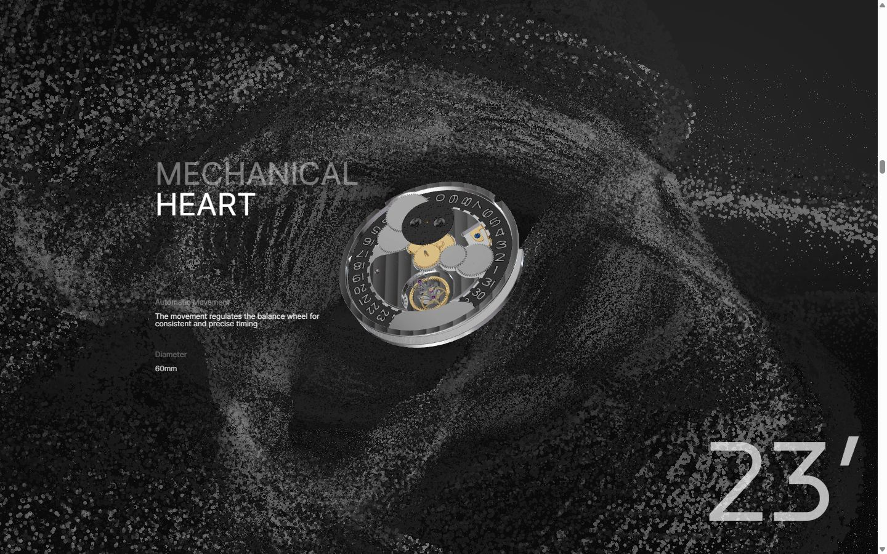
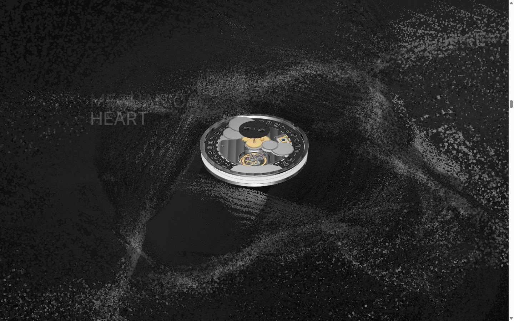
Mobile
Stack détectée
GSAP, Lenis, ScrollTrigger, SplitText/SplitType, Svelte, Three.js, WebGL
Versions : GSAP 3.15.0 · Three.js r?
Shaders GLSL personnalisés extraits : 26 (voir shaders.glsl)
Design tokens
Couleurs (fonds, pondérées par surface)
#ebebeb · #a1a1a1 · #0a0a0a · #bcbcbc · #323232 · #b9b6bd
Couleurs de texte
#000000 · #ffffff · #bcbcbc · #323232 · #dddddd
Polices utilisées (par volume de texte)
Inter · Nekst · Times New Roman
Fichiers de police chargés
Typographie
| Élément | Police | Taille | Graisse | Interligne | Interlettrage | Casse |
|---|---|---|---|---|---|---|
| h1 | Nekst, sans-serif | 350px | 400 | 280px | normal | uppercase |
| h3 | Nekst, sans-serif | 192px | 400 | 149.76px | normal | none |
| p | Inter, sans-serif | 9px | 400 | normal | normal | none |
| li | "Times New Roman" | 11px | 400 | normal | normal | none |
| body | "Times New Roman" | 1.40625px | 400 | normal | normal | none |
Échelle des tailles de texte
12px (114) · 80px (36) · 192px (28) · 350px (15) · 16.875px (10) · 360px (10) · 25px (10) · 60px (8) · 9px (4) · 270px (4) · 190px (3) · 10px (2) · 50px (2) · 11px (1) · 1.40625px (1)
Arrondis
50% · 5px · 4px
Transitions CSS fréquentes
Points de rupture (media queries)
1025px · 768px · 1024px · 1600px · 767px · 1441px
Animations CSS (@keyframes)
fill-circle, stroke
Variables CSS (:root)
--vh: 1vh;
Structure de la home
Hauteur : 34586 px — 847 nœuds DOM — canvas 1, vidéos 0, images 15
| # | Bloc | Hauteur | Titre | Médias |
|---|
Navigation :
Boutons / CTA :
SEO
Plan des titres
Performance (mesure locale, Chrome headless, connexion non bridée)
Mobile
Fichiers
captures/ : arrivée, scroll desktop (1440×900), pleine page, pages internes, mobile (390×844 @2x) ; vidéo de scroll dans la release GitHub « videos » (lien en haut de fiche)page.html : DOM rendu · styles.css : CSS chargé · scripts/ : JS chargé (index dans _index.json) · shaders.glsl : shaders extraits · rea-bundle.json : analyse REA du bundle (chunks, routes, endpoints)